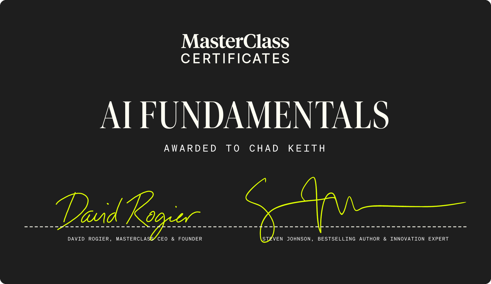
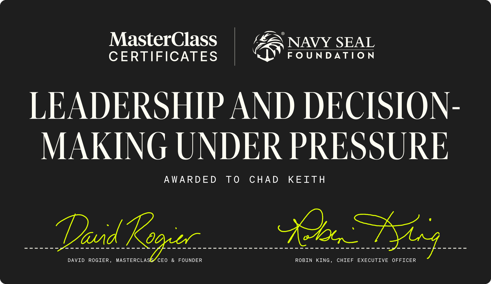
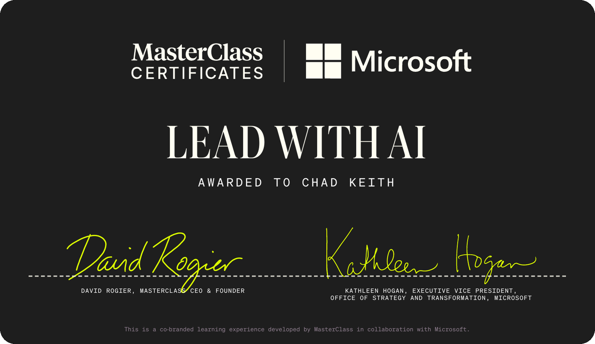

AI, Jamf, and Apple certifications — the same stack Atlas lists at atlascarolina.com/certifications, plus my personal Credly and MasterClass badges.
Recent professional development in AI and leadership, including the Lead with AI program developed with Microsoft. AI Fundamentals is the credential behind the Atlas AI practice at atlassolutions.tech.

MasterClass Certificates program led by Steven Johnson, bestselling author and innovation expert.

MasterClass Certificates program in partnership with the Navy SEAL Foundation, led by CEO Robin King.

MasterClass Certificates program developed with Microsoft, led by Kathleen Hogan, EVP of Strategy and Transformation at Microsoft.
Current Credly badges and partner-track credentials for Apple device management and security.
Configure Jamf Pro instances and build core workflows for customers.
Complex management workflows and best practices for delivering Jamf Pro services.
Foundational knowledge of Jamf Pro components and how to explain product value.
Jamf Connect and Jamf Protect foundations for identity and endpoint security.
Based on the Jamf 100 course — associate-level Jamf Pro certification.
Based on the Jamf 170 course — endpoint security with Jamf Protect.
Jamf Certified Administrator (CCA) and Casper Certified Administrator (CCA 9, 10).
Casper Mobile Administrator (CMA 9) — iOS device management credentials.
Community recognition listed with Atlas’s Jamf partner credentials.
Apple support and technical credentials earned across macOS and iOS deployments.
Apple IT professional credential listed on Atlas’s certifications page.
ACTC — macOS 10.9 and 10.10.
MTC — iOS device support and troubleshooting.
Enterprise wireless network design and administration (UEWA).
Through Atlas Technology Solutions — the partner badges on atlascarolina.com/certifications.
Apple Consultants Network member serving Charlotte and the Carolinas.
Managed service provider delivering Jamf for client environments.
Certified integrator with 10+ years of Apple MDM engagements.
Official Jamf services partner for deployments and ongoing management.
Authorized reseller supporting licensing and platform adoption.
The AI practice lives at atlassolutions.tech. Full company badges are on atlascarolina.com.